Complete Unit
KS3: Early Modern World & Global Encounters (1450–1750)
Course Textbook
Enquiry: How 'global' was Britain's transformation between 1450 and 1750?
Contents
|
Lesson 1: Who held global power in 1450?
|
Page 3
|
|
Lesson 2: How did religious conflict trigger global exploration (1517–1588)?
|
Page 8
|
|
Lesson 3: Trade or takeover: How did early encounters turn into empire?
|
Page 15
|
|
Lesson 4: James I and the Gunpowder Plot: Why was religious division so volatile?
|
Page 21
|
|
Lesson 5: Who controlled Britain? The Ideological Battle
|
Page 24
|
|
Lesson 6: Who controlled Britain? The Economic Shift
|
Page 31
|
|
Lesson 7: What were the mechanics of the Transatlantic Slave Trade?
|
Page 33
|
|
Lesson 8: How did enslaved Africans resist the Transatlantic Slave Trade?
|
Page 38
|
|
Lesson 9: How 'modern' was Britain by 1750? (Synthesis & Assessment)
|
Page 45
|
L1: Who held global power in 1450?[[SRC_MARKER:L0_Start]]
Learning Objectives
Identify the major global powers and trading hubs in the year 1450.
Explain how the Ottoman Empire and West African kingdoms controlled global wealth.
Evaluate why Western Europe was on the periphery (edges) of world trade in 1450.
Vocabulary Check
Write a short paragraph using at least FOUR of the vocabulary words below correctly.
Silk Road | Ming Dynasty | Ottoman Empire
Source A
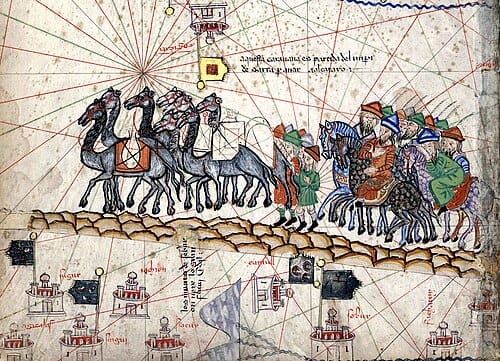
A detail from the famous Catalan Atlas of 1375, depicting Marco Polo's caravan travelling along the Silk Road. For centuries, this massive network of overland trade routes was the artery of global wealth, connecting Europe to the riches of Asia.
[[SRC_MARKER:L0_Task_0_0]]Q1. Study Source A. What does this 1375 map detail suggest about how trade was conducted between Europe and Asia before the discovery of sea routes?
In May 1453, a Venetian merchant named stood on the stone ramparts of Constantinople, watching in terror as massive iron cannonballs shattered the thickest walls in Christendom.
For over a thousand years, the Byzantine Empire had stood as Europe’s great eastern shield. But the army outside the walls was not European—it was the military machine of 21-year-old of the Ottoman Empire. When Constantinople fell on 29 May 1453, Mehmed did not destroy the city; he renamed it
Istanbul, transformed it into the jewel of the Islamic world, and took control of the ultimate prize: the vital crossroads connecting European trade to Asia.
🌍 Western Europe
(Desperate for Spices)
🐪 The Silk Road
(Vast Global Wealth)
For merchants in London, Paris, or Venice, this was catastrophic. Europe did not rule the world in 1450. In fact, if a traveler from another planet had visited Earth in the 15th century, Western Europe would have looked like an isolated, impoverished backwater compared to the colossal wealth of Asia and Africa.
Q2 Knowledge Check: Review the events of 1450.
1. Why was the fall of Constantinople catastrophic for merchants in Western Europe?
Source B: An Eyewitness Account of Sultan Mehmed II entering Constantinople (1453)
"The Sultan entered the city with great pomp... He inspected the great church of Hagia Sophia and commanded that it immediately be converted into a mosque. His armies were disciplined, his power absolute, and the rulers of Europe quaked with fear at his name."
— George Sphrantzes, a Greek scholar writing in 1454.
A Contrast in Living (1450)In 1450, a typical European peasant lived in a tiny, one-room hut made of wattle and daub (woven sticks covered in mud) with a thatched straw roof, sharing the dirt floor with their livestock to stay warm. In contrast, the Oba (King) of Benin lived in a sprawling palace complex covering miles, featuring immense courtyards, wooden pillars coated in bronze, and roofs topped with cast-copper birds. Meanwhile, the Ming Emperor in China commanded the vast 'Forbidden City', a staggering complex of 980 buildings with sweeping golden-yellow glazed roof tiles and red pillars.
[[SRC_MARKER:L0_Task_2_0]]Q3. Study Source B. What does the eyewitness account suggest about the power of the Ottoman Empire compared to Christian Europe in 1453?
[[SRC_MARKER:L0_Task_2_1]]Q4. Drawing Task: Draw a quick sketch comparing a poor European peasant's hut in 1450 with the grand palace of the Ming Emperor or Oba of Benin.
Before 1750, European powers did not dominate the world. The true economic superpowers were Asian empires like Qing China and Mughal India. European merchants were desperate to access the silk, tea, and porcelain of China, but the Chinese Emperor severely restricted their access. European traders were forced to live and work in small, heavily regulated zones on the edge of the Pearl River in Canton, closely watched by Chinese authorities.
Q5 Knowledge Check: Global Power in 1450
1. How does the reality of the Thirteen Factories in Canton challenge the idea that Europeans dominated global trade in the 1700s?
The Ottoman Empire: The Gatekeeper of the East
By 1450, the Ottoman Empire had built a dominant superpower spanning Southeastern Europe, Western Asia, and North Africa. By holding Istanbul, controlled the land routes of the Silk Road.
If an English noble wanted luxury silk, porcelain from Ming Dynasty China, or pepper from India, it had to pass through Ottoman territory. The Sultan slapped heavy taxes on all European merchants. Western Europe was effectively locked out of direct trade with Asia, forced to pay whatever prices the Ottomans demanded.
Source D

Fresco of the Siege of Constantinople (1537)
[[SRC_MARKER:L0_Task_5_0]]Q6. Study Source D. How does the artist use scale, chaos, and religious imagery to emphasize the sheer trauma of the Fall of Constantinople for Christian Europe?
[[SRC_MARKER:L0_Task_5_1]]Q7. Study Source D (Fresco of the Siege of Constantinople). What military technologies or tactics are visible in this depiction of the 1537 siege?
Far to the south, sub-Saharan Africa boasted civilizations whose wealth rivaled anything in Europe.
- The Kingdom of Benin (Edo Empire): In modern-day Nigeria, the Oba (King) of Benin ruled a sprawling, highly organized state protected by thousands of miles of earthwork walls—structures larger than the Great Wall of China. Benin’s craftsmen produced world-famous bronze relief sculptures using the complex lost-wax casting technique, depicting a sophisticated courtly culture.
- The Empire of Mali: Built on vast trans-Saharan trade routes, Mali was world-renowned for its gold reserves. Just a century earlier, Mali’s emperor, Mansa Musa, made a pilgrimage to Mecca carrying so much gold that he gave it away in Cairo, causing hyperinflation and knocking down the value of gold across the Middle East for a decade.
Source E
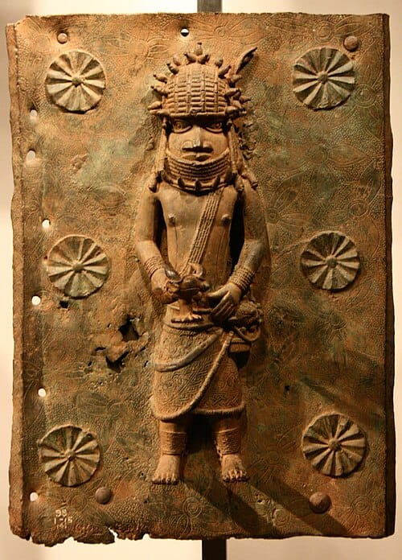
16th-Century Benin Bronze Plaque
[[SRC_MARKER:L0_Task_7_0]]Q8. Study Source E (the 16th-Century Benin Bronze Plaque). How does this artifact challenge traditional European assumptions about pre-colonial African societies?
Source E: A European Description of the Wealth of West Africa
"In this land there is so much gold that the King’s horses wear bridles made of pure gold... The merchants of Cairo, Venice, and Genoa travel across the burning sands of the desert just to buy a fraction of their wealth."
— Adapted from the Catalan Atlas, created in Majorca, 1375.
Source F
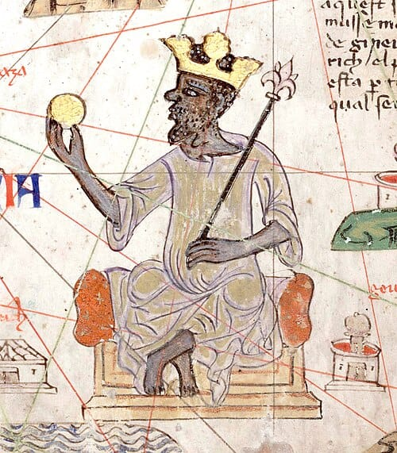
Catalan Atlas (1375) - Mansa Musa
[[SRC_MARKER:L0_Task_9_0]]Q9. What impression do Sources E and F give about the balance of power between Europe and the rest of the world in the 15th century?
At the far eastern end of the globe lay
Ming Dynasty China, home to roughly 100 million people. China was the economic powerhouse of the world:
- They invented gunpowder, paper money, the magnetic compass, and printing presses centuries before Europe.
- Between 1405 and 1433, Zheng He commanded a massive imperial fleet of "treasure ships"—vessels five times larger than ’s Santa Maria—exploring the Indian Ocean and trading as far as East Africa.
For generations, older history textbooks began modern world history with European explorers "discovering" the globe after 1492. Modern historians heavily challenge this traditional view:
Historian Perspective: Peter Frankopan (The Silk Roads, 2015)
"For thousands of years, the pulse of the earth beat not in Europe, but along the Silk Roads... Europe was an outpost, a small region on the edge of the great continent of Eurasia. In 1450, the true wealth, science, and military power of the world lay firmly in the East and in Africa."
Why does this matter?Understanding 1450 changes how we view the rest of world history. Western Europe did not launch voyages of exploration in the late 1400s because they were superior;
they did it out of desperation. Trapped by the Ottoman Empire and desperate for African gold and Asian spices, Europeans were forced onto the dangerous Atlantic Ocean to find a new route to the riches of the East.
Think-Pair-Share: Q10 Class Debate: Based on Professor Frankopan's argument, why might traditional European textbooks have deliberately ignored the wealth of the East in 1450?
| 1. My Thoughts (Think) |
2. Partner's Thoughts (Pair) |
|
|
⚔️ Side Quest: The English Peasant's Pottage
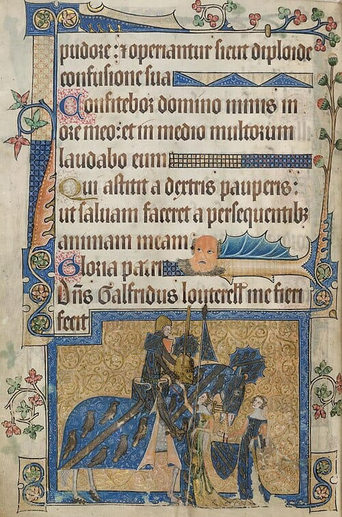
Source F: An authentic 15th-century manuscript illumination showing peasants performing grueling manual agricultural labor.
While the Oba of Benin commissioned magnificent bronze plaques and Ming Emperors wore silk, the vast majority of people in 1450 England were destitute peasant farmers. An ordinary English peasant lived in a dark, smokey, single-room wattle-and-daub hut shared with their livestock. Their diet was incredibly monotonous, consisting almost entirely of 'pottage'—a thick, bland stew of boiled cabbage, peas, and oats. They rarely travelled more than five miles from their birthplace and were completely oblivious to the vast riches flowing through the Silk Road or the trans-Saharan trade networks. Europe in 1450 was not the center of the world; for the average peasant, it was a cold, isolated struggle for survival.
[[SRC_MARKER:L0_Task_13_0]]Q11. How does the evidence in Source F and the description of the peasant's 'pottage' contrast with the lives of the Oba of Benin or the Ming Emperor?
[[SRC_MARKER:L0_Task_13_1]]Q12. Why does this evidence support the idea that Europe was an 'isolated outpost' in 1450?
Q13. Explain why Europe was not the center of global wealth and power in 1450.
L2: How did religious conflict trigger global exploration (1517–1588)?[[SRC_MARKER:L1_Start]]
Learning Objectives
Explain how the Protestant Reformation shattered European unity after 1517.
Analyze the role of Elizabethan privateers in challenging Catholic Spain's global monopoly.
Evaluate how the Spanish Armada (1588) marked a turning point in Britain’s imperial ambitions.
Do Now Activity
What was the overarching name for the ancient trade network connecting Asia to Europe?
Which major empire expanded to block overland European trade routes in 1453?
What city was captured by Sultan Mehmed II in 1453?
What West African kingdom was known for its detailed bronze plaques in the 15th century?
Why did the capture of Constantinople force European nations to look for new trade routes?
Vocabulary Check
Write a historically accurate sentence connecting two terms from the glossary box below.
Reformation | Privateer | Armada | Monopoly | Indulgences
Your Sentence:Source A
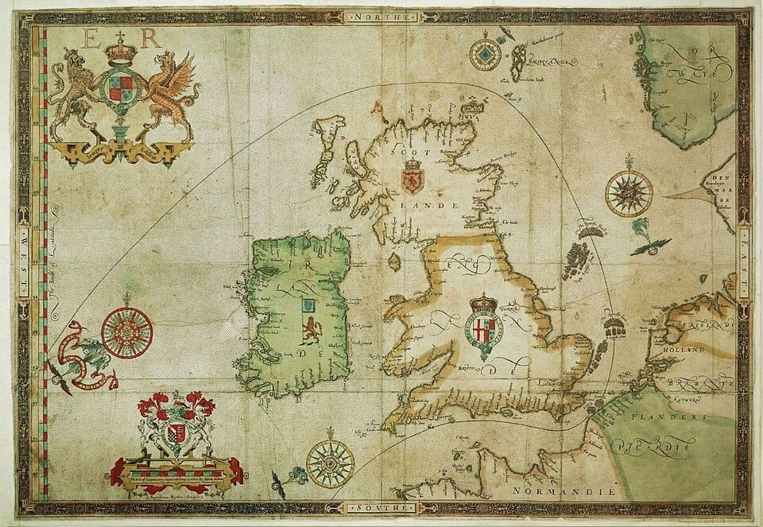
An expedition map showing the route of the Spanish Armada in 1588. of Spain launched the massive fleet to overthrow the Protestant , but it was defeated by English naval tactics and severe storms.
Source B

Portrait of (1591), attributed to Marcus Gheeraerts the Younger. Drake was an English privateer whose raiding of Spanish treasure ships and successful circumnavigation of the globe (1577–1580) helped transform England into a formidable maritime power.
On the muggy morning of 23 September 1568, off the coast of modern-day Mexico, a young English sea captain named Francis Drake listened to the thunder of Spanish naval cannons shattering his fleet.
Drake and his cousin, John Hawkins, had sailed into the Spanish port of San Juan de Ulúa to repair their battered ships. Spain claimed exclusive control over the entire Americas by papal decree—no Protestant English ships were legally allowed to trade or anchor in these waters. Despite a written truce signed by the Spanish Viceroy, Spanish warships ambushed the small English squadron.
Drake barely escaped aboard his small ship, the
Judith, leaving behind dozens of English sailors to be captured, interrogated, or executed by the Spanish Inquisition.
Drake did not view this ambush merely as a commercial dispute. To him, it was a holy war. He vowed personal revenge against King Philip II of Spain and the Catholic Church. For the next twenty years, Drake’s personal quest for vengeance would turn the Atlantic Ocean into a global battlefield, transforming England from a weak island nation into an aggressive maritime power.
[[SRC_MARKER:L1_Task_0_0]]Q1. Why did the Spanish attack Francis Drake and at San Juan de Ulúa despite having signed a truce?
Driven by religious competition and a desperate need for resources, European sailors began charting the massive, terrifying unknown of the global oceans. Mapmakers like Gerardus Mercator developed revolutionary new map projections that helped sailors navigate the vast distances of the Atlantic and Pacific, shrinking the world and connecting isolated continents for the first time.
The Invincible Armada (1588)
In 1588, Philip II sent the 'Invincible Armada' to invade England. The Spanish ships sailed in a massive, tightly packed crescent (half-moon) formation, making them almost impossible to attack. However, when the Armada anchored off Calais, the English launched a devastating night attack. They set eight of their own ships on fire (fireships) and let the wind blow these floating infernos directly into the crowded Spanish fleet, causing mass panic and breaking their defensive crescent.
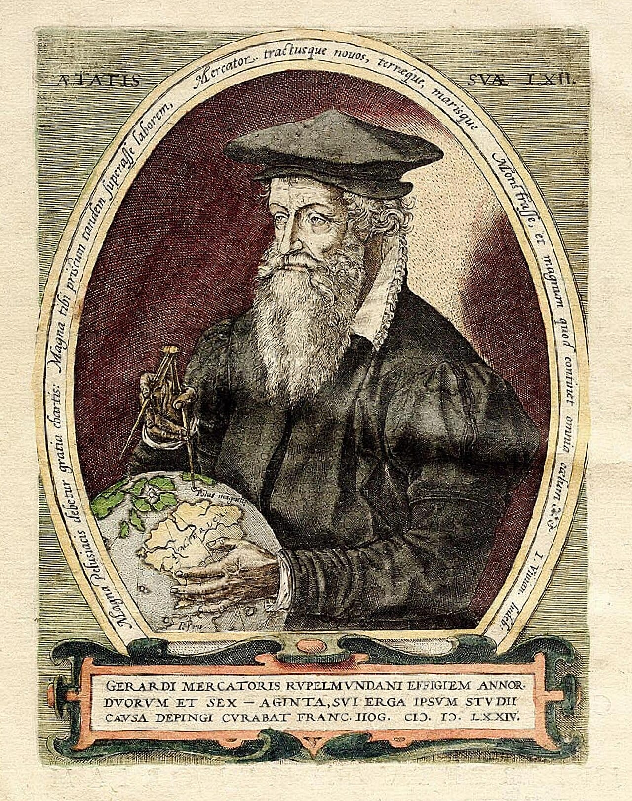
Portrait of Gerardus Mercator (1574)
[[SRC_MARKER:L1_Task_2_0]]Q2. Drawing Task: Sketch the crescent formation of the Spanish Armada being attacked by English fireships.
[[SRC_MARKER:L1_Task_2_1]]Q3. Study Source A (Portrait of Gerardus Mercator). Why was Mercator's 1569 map projection a revolutionary development for early modern sailors?
The Reformation Shatters Europe (1517)To understand why Drake was fighting in Mexico, we have to look back to Germany in 1517. A monk named nailed his
95 Theses to a church door, protesting corrupt practices in the Catholic Church—specifically the sale of "indulgences" (paying money to buy forgiveness for sins).
Luther’s protest ignited the
Protestant Reformation. Europe fractured into two hostile religious camps:
- Catholic Powers: Led by the wealthy Spanish Empire and the Pope in Rome.
- Protestant Powers: Small German states, the Netherlands, and eventually England after broke away from Rome in 1534.
Source B
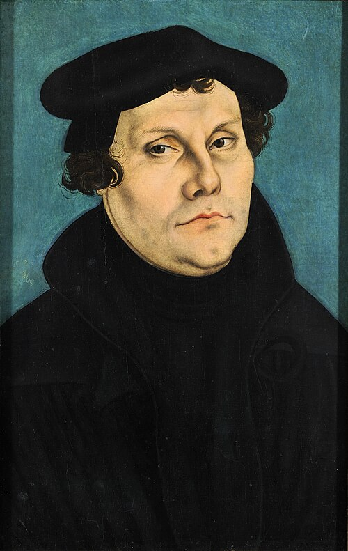
Portrait of Martin Luther (1529)
The New World Monopoly and the Papal Bull
In 1494, issued the Treaty of Tordesillas, drawing an imaginary line down the Atlantic Ocean. The Pope declared that all newly discovered lands to the west belonged exclusively to Catholic Spain, while lands to the east belonged to Catholic Portugal.
By 1550, gold and silver fleets were pouring out of South America, funding King Philip II’s armies in Europe. Catholic Spain claimed a complete monopoly over global trade.
Protestant Privateers: Pirates with a Royal License
When Protestant took the English throne in 1558, England was financially weak and lacked a large navy. Elizabeth could not afford a direct war against Spain. Instead, she used privateers.
A privateer was an armed merchant captain given a official letter of license—a Letter of Marque—by the monarch. This document allowed them to attack and plunder enemy ships legally during wartime. To the Spanish, privateers like Francis Drake, John Hawkins, and Walter Raleigh were illegal pirates (el Draque, "The Dragon"). To Elizabeth, they were cheap, effective freedom fighters who brought massive wealth back to London.
Between 1577 and 1580, Drake sailed around the world on his ship, the Golden Hind. He raided Spanish ports along the Pacific coast of South America, captured the Spanish treasure galleon Cacafuego carrying 26 tons of silver, and claimed land in California ("New Albion") for Elizabeth. When he returned, Elizabeth knighted him on the deck of his ship—a direct insult to King Philip II.
Source C
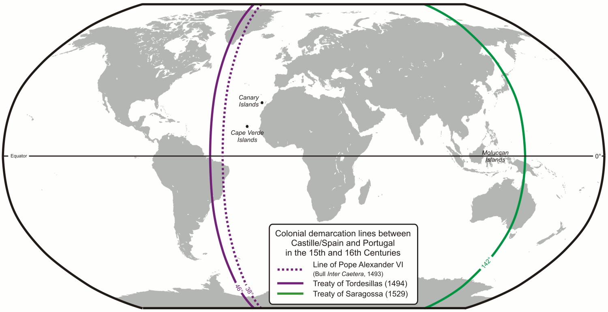
Map of the Treaty of Tordesillas (1494)
[[SRC_MARKER:L1_Task_6_0]]Q4. Look at Source C. Why would a map showing the Pope dividing the entire undiscovered world between Spain and Portugal absolutely infuriate Protestant monarchs like Queen Elizabeth I?
[[SRC_MARKER:L1_Task_6_1]]Q5. How did Queen Elizabeth I use privateers as a strategic tool against Spain?
Furious at English privateering, Elizabeth's support for Protestant rebels in the Netherlands, and the execution of the Catholic , King Philip II decided to invade England.
In May 1588, Philip launched the
Spanish Armada: 130 warships carrying 30,000 soldiers designed to overthrow Elizabeth and force England back to Catholicism.
The English navy, using smaller, faster ships equipped with long-range cannons, harassed the Armada up the English Channel. Off Calais, the English unleashed drifting
fire ships (vessels packed with pitch and gunpowder set ablaze), forcing the panicked Spanish ships to cut their anchors and scatter. A disastrous storm—termed the "Protestant Wind"—blew the remaining Spanish fleet around the rocky coasts of Scotland and Ireland, destroying over half their ships.
[[SRC_MARKER:L1_Task_7_0]]Q6. Describe the two main reasons the Spanish Armada failed to invade England.
Source B: An Excerpt from Queen Elizabeth I's Speech at Tilbury (August 1588)
"I know I have the body of a weak and feeble woman; but I have the heart and stomach of a king, and of a king of England too, and think foul scorn that Parma or Spain, or any prince of Europe, should dare to invade the borders of my realm... We shall shortly have a famous victory over these enemies of my God, of my kingdom, and of my people."
Source C: A Spanish Catholic Account of English Privateers (1579)
"This Francisco Drake is a thief, a heretic, and a minister of the Devil. He robs churches, desecrates holy images, and steals the treasure that belongs by divine right to His Catholic Majesty King Philip. He does not fight for trade; he fights to destroy the Holy Mother Church."
— Adapted from a letter by , a Spanish captain captured by Drake.
[[SRC_MARKER:L1_Task_8_0]]Q7. How does the author’s perspective in Source C differ from Source B regarding Francis Drake and the conflict?
Look closely at
The Armada Portrait painted shortly after the defeat of the Spanish fleet:
- The Right Hand on the Globe: Elizabeth’s hand rests directly over North America, signaling England's intent to challenge Catholic Spain for global empire.
- The Background Windows: The left window shows the calm English fleet; the right window shows the shattered Spanish Armada crashing against rocky shores in a storm.
- The Mermaid: A carved mermaid on the imperial chair symbolizes the English control of the seas and the temptation/destruction of foreign fleets.
Source F
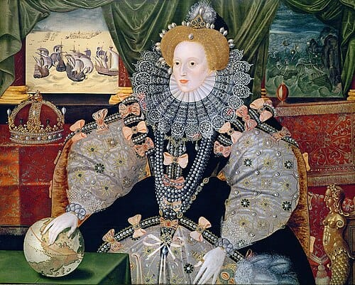
The Armada Portrait of Queen Elizabeth I (c. 1588)
[[SRC_MARKER:L1_Task_10_0]]Q8. What message was the artist of the Armada Portrait trying to convey about England's future?
[[SRC_MARKER:L1_Task_10_1]]Q9. Study Source F (The Armada Portrait of Queen Elizabeth I). How does the artist use symbolism in this painting to project Elizabeth's power following the defeat of the Spanish Armada?
Historian Perspective A: Traditional View (19th Century)
"The defeat of the Armada was a miraculous victory for Protestantism and freedom. God sent a divine storm to scatter the Catholic tyrant’s fleet, paving the way for the rise of the British Empire."
Historian Perspective B: Revisionist View (Geoffrey Parker, 2013)
"Philip II’s invasion failed due to structural flaws: poor communications between Spain and the Netherlands, rigid tactics, and terrible naval logistics. The 'Protestant Wind' simply finished off a fleet that had already been outmaneuvered by superior English ship design and artillery."
[[SRC_MARKER:L1_Task_11_0]]Q10. How does the revisionist view (Perspective B) challenge the traditional view (Perspective A) of the Armada's defeat?
⚔️ Side Quest: The Horrors of Scurvy
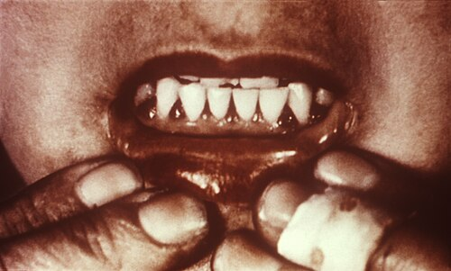
Source G: Historical medical documentation illustrating the horrifying effects of scurvy on a sailor's gums and teeth.
The 'Golden Age of Exploration' is often painted as a heroic era of brave captains claiming glory. But for the ordinary sailors on ships like Francis Drake's Golden Hind, life was a living nightmare of disease and malnutrition. The greatest enemy was not the Spanish navy, but scurvy—a terrifying disease caused by a severe lack of Vitamin C on long voyages. Because fresh fruit spoiled quickly, sailors survived on rock-hard, maggot-infested biscuits and salted beef that had often turned green. Without Vitamin C, a sailor's gums would swell and rot, their teeth would fall out, old wounds would miraculously rip open again, and they would slowly bleed to death internally. On many Elizabethan voyages, more than half the crew died of scurvy before ever seeing combat.
Think-Pair-Share: Q11 Why might history textbooks prefer to focus on the 'glory' of Francis Drake rather than the reality of scurvy?
| 1. My Thoughts (Think) |
2. Partner's Thoughts (Pair) |
|
|
Q12 Number these events from 1 to 4 in the order they happened.
- The Spanish Armada is defeated by the English fleet and bad weather.
- Martin Luther pins his 95 Theses to the door, beginning the Protestant Reformation.
- Francis Drake circumnavigates the globe and raids Spanish treasure ships.
- The Pope splits the 'New World' between Spain and Portugal.
Q13. How did the Protestant Reformation push England into global exploration and conflict with Spain?
L3: Trade or takeover: How did early encounters turn into empire?[[SRC_MARKER:L2_Start]]
Learning Objectives
Explain how joint-stock corporations (like the East India Company and Virginia Company) funded early English expansion.
Compare the early English colonial encounters in North America (Roanoke and Jamestown) with mercantile trade in Mughal India.
Evaluate the turning point where peaceful commercial trade shifted into territorial takeover and subjugation.
Do Now Activity
In what year did Martin Luther post his 95 Theses?
What name was given to English sailors, like Francis Drake, who were given legal permission to attack Spanish ships?
What was the name of the Spanish King who launched the Armada against England in 1588?
What weather event destroyed much of the fleeing Spanish Armada off the coast of Scotland?
Why did Queen Elizabeth I use privateers instead of the Royal Navy to challenge Spain in the Americas?
Vocabulary Check
Write a clear definition and a historically accurate sentence for the term: Joint-Stock Company
Source A

An early 19th-century painting showing the Thirteen Factories in Canton (Guangzhou). This was a designated trading enclave where foreign merchants were permitted to do business, strictly controlled by Chinese authorities without any European military fortifications.
Source B

A 1616 engraving of Matoaka (Pocahontas) by Simon van de Passe. She was dressed in English court fashion and presented to London society as 'Lady Rebecca'—a deliberate piece of propaganda by the Virginia Company to project success and secure financial investment for the struggling Jamestown colony.
In the winter of 1616, a 21-year-old Algonquin woman named Matoaka—popularly known as Pocahontas—arrived at the court of King James I in London.
She was dressed not in the traditional deer skins of her Powhatan homeland in North America, but in heavy English velvet, lace ruffles, and a tall felt hat. Rechristened "Rebecca Rolfe" following her conversion to Christianity and marriage to English tobacco planter John Rolfe, she was brought to England by the
Virginia Company as a living advertisement.
To the rich investors of London, Matoaka was proof that native populations in the "New World" could be tamed, converted, and integrated into a profitable English empire. But the reality back in North America was far grim. Matoaka had been kidnapped three years earlier by English colonists during a bloody border war. Within months of her court appearance in London, as she boarded a ship to return home, she fell ill and died at Gravesend on the River Thames.
Matoaka’s tragic life encapsulated the reality of early British expansion: what began as desperate, fragile trade encounters between unequal powers rapidly hardened into violent land seizures and permanent imperial domination.
Q1 Fill in the blanks using the words provided to summarize the story of Matoaka (Pocahontas).
Word Bank: propaganda | James I | converted | Pocahontas
Matoaka, often known as ______________, was brought to the court of King ______________ in London. The Virginia Company used her as a living piece of ______________ to convince wealthy investors that the indigenous people of America could be 'civilized' and ______________ to Christianity, hiding the brutal reality of the early colonial encounters.
Unlike Catholic Spain, where the King directly funded conquistadors and royal armies, early English expansion was driven by
private enterprise and capitalism.
The English Crown was too poor to fund risky overseas voyages. Instead, wealthy merchants formed
Joint-Stock Companies. Multiple investors pooled their capital to buy shares in a trading venture. If a ship sank or a colony failed, no single merchant was ruined; if it succeeded, the profits were divided proportional to their shares.
The American Frontier: From Lost Colony to Cash CropIn the 1580s, Sir Walter Raleigh organized the first English attempt to colonize North America on
Roanoke Island (modern-day North Carolina). It ended in total failure. When supply ships returned in 1590, the entire colony of 115 men, women, and children had vanished, leaving behind only the single word carved into a wooden post:
"CROATOAN".
Undeterred, the
Virginia Company launched a new venture in 1607, founding
Jamestown. The early years were disastrous:
- The Starving Time (1609–1610): Over 80% of the settlers died of dysentery, malaria, and starvation.
- The Powhatan Confederacy: The local indigenous population, led by Chief Powhatan, initially kept the inept English alive by trading maize.
- Tobacco Saved the Colony: In 1612, John Rolfe introduced a sweet Caribbean tobacco strain. Tobacco became Virginia’s "green gold."
To grow tobacco at scale, the colonists needed vast land and cheap labor. The English abandoned peaceful trade with the Powhatan and launched aggressive land seizures, sparking decades of brutal warfare. To defend themselves from Spanish ships and Powhatan attacks, the settlers built James Fort in a unique
triangular shape. The fort had high wooden palisade walls made of vertically buried logs. At each of the three corners stood a raised watchtower called a bulwark, mounted with heavy cannons facing both the James River and the dense inland woods. Inside the triangle, they built a church, a storehouse, and rows of simple wooden barracks.
Mughal India: Bowing Before the Peacock ThroneWhile the English were seizing land in America, their presence in Asia looked completely different.
In 1600, Queen Elizabeth I granted a royal charter to the
Governor and Company of Merchants of London Trading into the East Indies—better known as the
East India Company (EIC). When EIC merchant ships arrived in India, they encountered the vast
Mughal Empire, ruled by Emperor Jahangir.
The Mughal Empire held 25% of world GDP, possessed massive armies, and produced the world's finest cotton textiles. The English could not conquer India by force.
In 1615, King James I sent diplomat
Sir Thomas Roe to Jahangir’s court. Roe spent three years bowing before the Emperor, offering bribes and gifts, and begging for a
firman (imperial decree) allowing the EIC to build fortified trading posts (
factories) along the coast. For 150 years, the EIC remained humble traders paying taxes to the Mughals. But as Mughal central power began to fracture in the early 1700s, the EIC transformed its private corporate security guards into a ruthless private army—laying the groundwork for the total military conquest of India.

Sir Thomas Roe at the Mughal Court (1615)
[[SRC_MARKER:L2_Task_2_0]]Q2. How did the funding of early English colonial expansion differ from the Spanish model?
[[SRC_MARKER:L2_Task_2_1]]Q3. Drawing Task: Based on the text, draw a bird's-eye view of the fortified Jamestown settlement and label its defenses.
[[SRC_MARKER:L2_Task_2_2]]Q4. Study Source A (Sir Thomas Roe at the Mughal Court). What does this image suggest about the balance of power between English ambassadors and the Mughal Empire in 1615?
Source B: From the First Charter of the Virginia Company (1606)
"We greatly commend their desires for the furtherance of so noble a work, which may, by the Providence of Almighty God, hereafter tend to the Glory of His Divine Majesty, in propagating of Christian Religion to such People as yet live in Ignorance and miserable Barbarism, and may in time bring the infidels and savages living in those parts to human civility..."
Source C: From the Journal of Sir Thomas Roe at the Mughal Court (1616)
"The Emperor Jahangir hath rich carpets, thrones of solid gold, and jewels beyond counting. He treats our King’s letters with polite indifference, viewing us as small traders from a cold, poor island... He cares nothing for our goods, save for clockwork toys and English hunting dogs, but he permits us to trade so long as we pay our taxes and remain obedient subjects."
[[SRC_MARKER:L2_Task_3_0]]Q5. What was the primary motivation stated in Source B for colonizing Virginia, and why might the Virginia Company emphasize religious duty over profit?
[[SRC_MARKER:L2_Task_3_1]]Q6. Using Source C, explain why the East India Company was forced to act politely toward Mughal rulers in 1616, whereas English settlers in Virginia acted aggressively toward Native Americans.
Source F
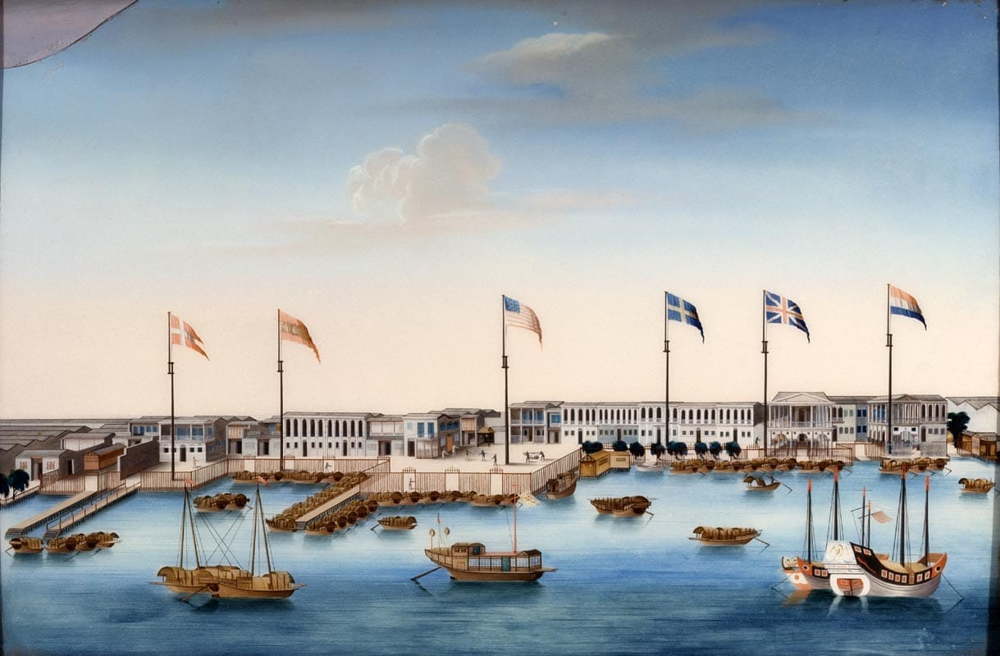
View of the Thirteen Factories in Canton (c. 1800)
[[SRC_MARKER:L2_Task_4_0]]Q7. How does the reality of the Thirteen Factories in Canton challenge the idea that Europeans dominated global trade in the 1700s?
Examine the 1607 architectural plan of James Fort in Virginia:
- The Triangular Shape: Designed for maximum defense with minimal men. A cannon bastioned at each of the three corners provided 360-degree crossfire.
- River Orientation: The fort sat directly on the James River, allowing quick escape or resupply by sea, but surrounded by stagnant marshland filled with malarial mosquitoes.
- Palisade Walls: High wooden walls built from felled timber shielded the storehouses and chapel, turning the settlement into an armed military outpost rather than a peaceful civilian farm.
Source D

Plan of James Fort in Virginia (1607)
[[SRC_MARKER:L2_Task_6_0]]Q8. What does the design of the Jamestown Fort suggest about the relationship between the English settlers and the local indigenous population?
Historian Perspective A: John Robert Seeley (The Expansion of England, 1883)
"We seem, as it were, to have conquered and peopled half the world in a fit of absence of mind... The British Empire was not planned by kings or generals; it grew organically through small merchants, traders, and adventurers seeking honest commercial trade."
Historian Perspective B: Shashi Tharoor (Inglorious Empire, 2017)
"There was nothing 'accidental' about the corporate greed of the East India Company or the Virginia Company. From their inception, joint-stock corporations were designed with royal backing to extract wealth, monopolize global trade, and subjugate local populations whenever commercial trade turned into territorial opportunity."
Think-Pair-Share: Q9 How do Perspective A and Perspective B disagree on the origins of the British Empire?
| 1. My Thoughts (Think) |
2. Partner's Thoughts (Pair) |
|
|
⚔️ Side Quest: The Invasion of the Pigs
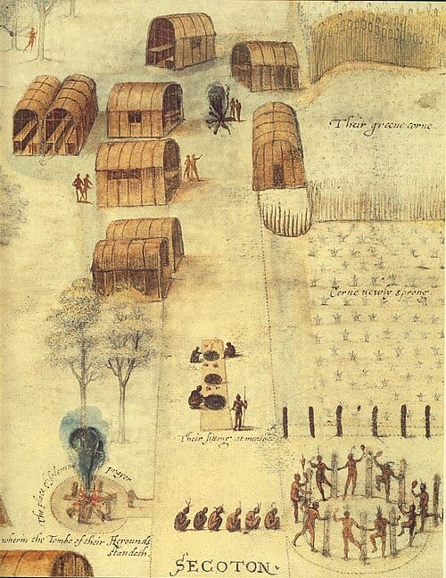
Source E: John White's authentic 1585 watercolor painting of the Algonquian village of Secotan, showing their carefully managed, unfenced corn fields.
When textbooks talk about the English colonization of North America, they focus on guns, land treaties, and tobacco. But one of the most destructive weapons the English brought to Jamestown was the common pig. The Algonquian Powhatan people did not use fences; they carefully managed open forests and planted complex, exposed fields of corn, beans, and squash. The English, however, let their livestock roam wild. Hundreds of English pigs invaded the forests, devouring the natives' crops, destroying the roots of native plants, and wrecking the delicate ecological balance that the Powhatan relied on for survival. For the Indigenous people, the English were not just a military threat; they were an ecological disaster that literally ate the local food supply.
[[SRC_MARKER:L2_Task_9_0]]Q10. How does this 'ground-up' detail change our understanding of why Native Americans became hostile to the Jamestown settlers?
Let's test your understanding of how early trade turned into empire.
Q11. Explain how the creation of the East India Company (EIC) transformed British trade.
L4: James I and the Gunpowder Plot: Why was religious division so volatile?[[SRC_MARKER:L3_Start]]
Learning Objectives
Understand the motivations and consequences of the Gunpowder Plot.
In seventeenth-century England, religion was not a private matter of personal conscience; it was central to daily life, guiding morals, behaviour, and major milestones such as birth, marriage, and death. Decades of religious upheaval following the Reformation had created deep division. As England switched between Protestant and Catholic monarchs, each side accused the other of being in league with the Devil, reinforcing public fears and suspicion. Roman Catholics who refused to accept the Church of England were branded as recusants. Heavily concentrated in northern regions like Yorkshire, Durham, and Lancashire, Catholics were viewed by Protestant authorities as a permanent security threat who might obey foreign powers or stage rebellions.
When James I came to the throne, English Catholics hoped for greater toleration. However, James struggled to manage religious factions. When he met with Church leaders in 1604, he failed to satisfy strict Protestants, prompting some to leave the country entirely. At the same time, James angered Catholics by ordering all Catholic priests to leave England or face execution. This severe crackdown convinced a small group of Catholic conspirators that peaceful reform was impossible and that James had to be removed.
Led by Robert Catesby, the conspirators—including Guy Fawkes, Thomas Percy, and the Wright brothers—devised a plan to assassinate the King. They intended to detonate 36 barrels of gunpowder hidden beneath piles of firewood in the cellars of the House of Lords during the State Opening of Parliament on 5 November 1605. The explosion was meant to kill James and his government in a single stroke, allowing the plotters to seize his young daughter, Princess Elizabeth, and install her as a Catholic monarch.
The plot unraveled on 26 October 1605, when Lord Monteagle received an anonymous letter warning him to avoid Parliament because it would "receive a mighty blow". Monteagle delivered the letter to Robert Cecil, the King’s Chief Minister. Cecil ordered searches of the vaults, where guards discovered Guy Fawkes calling himself "John Johnson" beside the hidden explosives in the early hours of 5 November. Fawkes was arrested and tortured until he confessed and revealed the names of his co-conspirators. The remaining plotters fled to Holbeche House in the Midlands, where a gun battle resulted in the deaths of Catesby and Percy, while the survivors were captured and later executed. Cecil subsequently used the event to push stricter Penal Laws through Parliament, cementing public anti-Catholic sentiment and establishing the tradition of lighting bonfires on 5 November.
[[SRC_MARKER:L3_Task_3_0]]Q1. The Foreign Diplomat’s Confidential Dispatch
Take on the role of a foreign ambassador visiting London in 1605. Write a confidential report back to your home court explaining why religious division in England is so intense. Include your impressions of King James, his falling out with Church leaders and Parliament, and the growing Catholic resentment over the expulsion of priests.
[[SRC_MARKER:L3_Task_3_1]]Q2. Prosecution Speech at Westminster
It is 27 January 1606, and the trial of the surviving conspirators has begun before Lord Chief Justice Sir John Popham. Write the opening speech for the prosecution outlining the charges—treason, attempted murder of the King, and conspiracy to reintroduce Catholicism—explaining why treason against the Protestant Crown requires the harshest public punishment.
[[SRC_MARKER:L3_Task_3_2]]Q3. Eyewitness Letter Home
Imagine you were a Londoner who witnessed the capture of Guy Fawkes and the subsequent execution of the conspirators in January 1606. Write a letter to a friend describing the mood of the city, explaining why most citizens were relieved the plot failed, and reflecting on how the King wants the fifth of November remembered.
Source A

A contemporary Dutch print showing Robert Catesby, Thomas Percy, Guido (Guy) Fawkes, and fellow plotters gathered in cloaks and broad-brimmed hats.
Source B

Official records containing Fawkes’s firm initial signature ("Guido Fawkes") alongside his faint, broken signature written after interrogation on the rack.
Source C

The original unsigned manuscript advising Monteagle to stay away from Parliament.
[[SRC_MARKER:L3_Task_4_0]]Q4. 1. Inference from Source A (2 Marks)
[[SRC_MARKER:L3_Task_4_1]]Q5. 2. Utility & Provenance of Source A (8 Marks)
[[SRC_MARKER:L3_Task_4_2]]Q6. 3. Analysis of Evidence in Source B (4 Marks)
Q7 4. Follow-Up Investigation (4 Marks)
| Enquiry Field | Student Response |
|---|
[[SRC_MARKER:L3_Task_4_4]]Q8. Essay Question (16 Marks)
"The Gunpowder Plot was caused entirely by the harsh persecution and broken promises of King James I."
How far do you agree with this statement?
In your answer, ensure you:
- Examine the impact of recusancy penalties and the banishment of Catholic priests.
- Consider alternative perspectives, including religious extremism or political exploitation by Robert Cecil.
- Conclude with a clear, balanced historical judgement supported by evidence.
[[SRC_MARKER:L3_Task_4_5]]Q9. Study Source C. What does this execution scene suggest about how the government punished treason in the 17th century?
L5: Who controlled Britain? The Ideological Battle[[SRC_MARKER:L4_Start]]
Learning Objectives
Analyze why King Charles I and Parliament fought the English Civil War (1642–1651).
Evaluate how colonial wealth from sugar and tobacco reshaped British politics during the Commonwealth.
Debate who held true power in Britain by 1660: the Monarchy, Parliament, or Atlantic Capitalists.
Do Now Activity
What was the name of the first permanent English settlement in North America (1607)?
Which cash crop saved the Jamestown colony from economic ruin?
What type of business model was the East India Company (EIC), where multiple investors pooled money?
Which powerful Asian empire did Sir Thomas Roe visit in 1615?
Why were the English submissive traders in India, but aggressive conquerors in North America?
Vocabulary Check
Write a historically accurate sentence connecting two terms from the glossary box below.
Divine Right of Kings | New Model Army | Commonwealth | Plantation | Navigation Acts
Your Sentence:
[[SRC_MARKER:L4_Source_0]]
The East Offering its Riches to Britannia (1778)

Notice how Britannia sits elevated, while figures representing Asia, Africa, and India offer her their goods. This painting was placed on the ceiling of the East India Company's headquarters, literally looking down on the directors as they made decisions about global trade.
A ceiling painting by Spiridione Roma (1778), originally commissioned for the Revenue Committee Room at East India House. It is an allegorical painting showing Britannia's wealth, receiving jewels, spices, and silk from Asia, Africa, and India. It highlights the ideology and wealth of Britain's empire.
Q1 How useful is this painting as evidence of Britain's global power and ideology in 1778? (See Textbook Page 24)
[[SRC_MARKER:L4_Source_1]]
Q2 Study Source A. Why did the monarch combine the English and Scottish symbols into a single Coat of Arms?
Source A
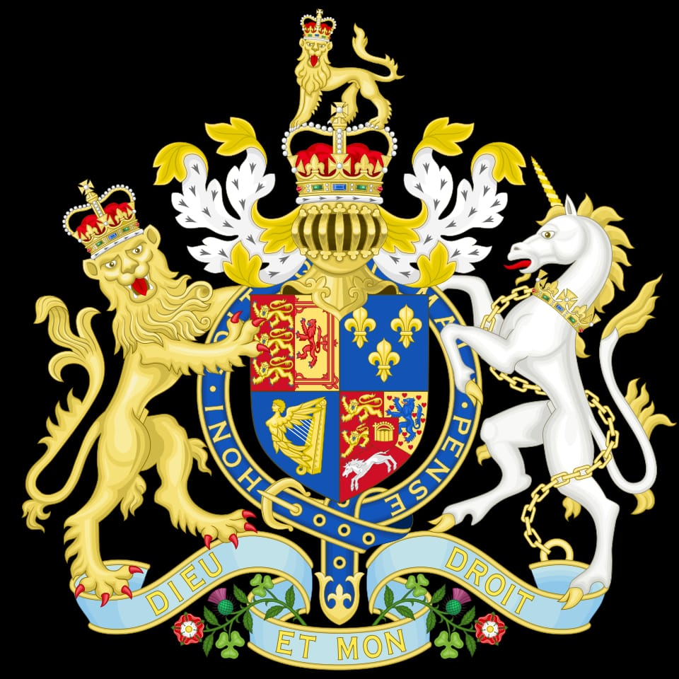
The Coat of Arms of Great Britain following the Hanoverian succession in 1714. This era saw the stabilization of a constitutional monarchy where Parliament, rather than the King, held ultimate financial and political authority.
Source B
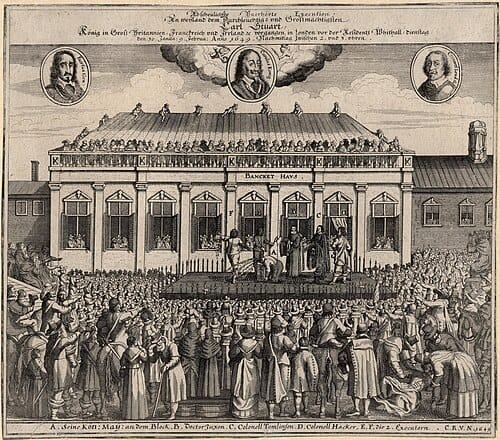
A contemporary engraving by John Weesop depicting the execution of King Charles I outside the Banqueting House in Whitehall, 1649. His trial and execution for high treason marked a radical shift in power, proving that an English monarch could be held legally accountable by his own subjects.
At 2:00 PM on Tuesday, 30 January 1649, a man in a black velvet coat stepped out of a window of the Banqueting House in Whitehall, London, onto a wooden scaffold draped in black cloth.
The man was
King Charles I. Below him stood thousands of silent onlookers, surrounded by ranks of iron-armored cavalry. For seven years, England had been ripped apart by a bloody Civil War that cost the lives of nearly 200,000 people—a higher proportion of the population than died in the First World War.
Charles put his head on the wooden block. He stretched out his hands—the prearranged signal—and the masked executioner’s axe severed his head with a single blow. The executioner held the dripping head aloft and shouted:
"Behold the head of a traitor!"A collective groan echoed through the crowd. Never before in European history had a monarch been put on trial, condemned, and executed by his own Parliament.
But who was really pulling the strings? Was this victory brought about by high-minded Parliamentary ideals of liberty? Or was it secretly fueled by a new class of ultra-rich Atlantic merchants whose sugar and tobacco profits were reshaping the British state?
[[SRC_MARKER:L4_Task_0_0]]Q3. Why was the execution of King Charles I such a shocking event in European history?
[[SRC_MARKER:L4_Task_0_1]]Q4. Study Source A. Why did the monarch combine the English and Scottish symbols into a single Coat of Arms?
To understand this chaotic era, we must investigate three competing forces battling for the soul—and wealth—of Britain.
THE CROWN (Charles I)
"Divine Right of Kings"
PARLIAMENT
"Godly Governance & Rights"
VS
ATLANTIC MERCHANTS
"Sugar, Tobacco & Empire"
Contender 1: The King & "Divine Right" (Charles I)
Charles I believed in the Divine Right of Kings—the conviction that God alone chose monarchs to rule, making royal authority absolute.
- The Spark: Between 1629 and 1640, Charles ruled without calling Parliament at all (The Eleven Years' Tyranny). To raise money without Parliament's consent, he forced illegal taxes on the nation, such as Ship Money.
- The Explosion: When Charles marched into the House of Commons with 400 armed soldiers in 1642 to arrest five MP leaders, Parliament revolted. War broke out: Royalists (Cavaliers) supporting the King vs. Parliamentarians (Roundheads) fighting for parliamentary consent.
Contender 2: Parliament & ’s New Model Army
Parliament won the Civil War not because of noble speeches, but because of a revolutionary military machine: The New Model Army.
Led by a strict Puritan country gentleman named Oliver Cromwell, this army was built on merit rather than noble birth. Soldiers sang religious psalms as they charged into battle at Naseby (1645) and Preston (1648).
When Charles I was executed in 1649, monarchy was abolished. Britain was declared a republic: The Commonwealth of England. By 1653, Cromwell dismissed Parliament at swordpoint, taking total power as Lord Protector—a military dictator who banned Christmas, theater, and sports.
Contender 3: The Atlantic Merchant Elite
While Royalists and Roundheads were hacking each other to pieces on English battlefields, a silent economic revolution was happening in the Caribbean and North America.
In the 1640s, English planters in Barbados transformed the island from tobacco farming to mass sugar plantation production powered by enslaved African labor. Sugar was nicknamed "white gold."
- A single acre of Barbados sugar produced ten times more profit than an acre of English wheat.
- By 1650, Barbados generated more export wealth than all the North American colonies combined.
The Hidden Link: The merchants who grew rich off Caribbean sugar and Virginian tobacco were almost all ardent supporters of Parliament. They hated Charles I because his royal monopolies interfered with their free trade. They poured millions into funding Cromwell’s New Model Army.
When Cromwell took power, he used their money to build the Commonwealth Navy and passed the Navigation Acts (1651)—laws stating that all colonial goods had to be carried on English ships, effectively seizing global trade from the Dutch!
[[SRC_MARKER:L4_Task_1_0]]Q5. How did the Atlantic Merchants use their wealth to influence the outcome of the English Civil War?
Work like a professional historian. Examine these three rare primary sources from the 1640s and 1650s to identify where the true power lay.
Source B: The Charge Against King Charles I (Read at his Trial, January 1649)
"That the said Charles Stuart, being admitted King of England, and therein trusted with a limited power to govern by and according to the laws of the land... hath traitorously and maliciously levied war against the present Parliament and the people therein represented... for the erecting and upholding to himself of an unlimited and tyrannical power."
— John Bradshaw, President of the High Court of Justice.
Source C: A London Merchant’s Pamphlet on Sugar Profits (1654)
"This small island of Barbados doth yield more wealth to the Commonwealth than any kingdom in Europe... Our ships return laden with sweetness, paying thousands in customs to the state, and maintaining hundreds of brave sailors. Without the trade of the West Indies, the New Model Army would starve for want of pay."
— Adapted from a pamphlet by Maurice Thompson, London merchant and slave trader.
Source D: Oliver Cromwell’s Speech Dismissing the Rump Parliament (1653)
"It is high time for me to put an end to your sitting in this place, which you have dishonoured by your contempt of all virtue... You are an factious crew! Ye are noblemen for gold; ye are lovers of money, not justice! In the name of God, go!"
— Oliver Cromwell, speaking to MPs on 20 April 1653 before locking the doors of Parliament.
Think-Pair-Share: Q6 How does Source C reveal a completely different reason for Parliament’s victory over the King compared to the official reason given in Source B?
| 1. My Thoughts (Think) |
2. Partner's Thoughts (Pair) |
|
|
[[SRC_MARKER:L4_Task_2_1]]Q7. Look at Source D. What does Cromwell accuse MPs of becoming? Why is this ironic given that merchant wealth helped bring Cromwell to power?
Source F:
Interpretation A: Professor Christopher Hill (The Political View)
"The English Civil War was a revolutionary class struggle. It permanently smashed the absolute monarchy and the old feudal order, transferring political power to Parliament and the middling sorts."
Interpretation B: Professor Eric Williams (The Imperial/Economic View)
"The true victors of the 17th century were the imperial merchant classes. By restricting the monarchy, Parliament secured the political stability needed to build the massive joint-stock companies (like the East India Company and the Royal African Company) which extracted vast wealth through colonization and slavery."
[[SRC_MARKER:L4_Task_3_0]]Q8. Which historian argues that the conflict was primarily about political and class rights, and which argues it was about establishing the conditions for global capitalism and empire?
⚔️ Side Quest: The Diggers and the Dream of Equality
 Source G: The authentic title page of the radical 1649 pamphlet 'The True Levellers Standard Advanced' by Gerrard Winstanley.
Source G: The authentic title page of the radical 1649 pamphlet 'The True Levellers Standard Advanced' by Gerrard Winstanley.
History usually remembers the English Civil War as a battle between King Charles I and Oliver Cromwell. But among the ordinary foot soldiers of the New Model Army and the desperate, starving peasants, radical new ideas were brewing. A group known as the Diggers (or True Levellers) believed that the war shouldn't just replace a King with a Parliament; it should wipe out poverty entirely. Led by Gerrard Winstanley in 1649, the Diggers marched onto privately owned land at St George's Hill in Surrey and simply started planting vegetables, declaring that the earth was a 'common treasury for all' and that private property should be abolished. They envisioned a radically modern, equal, bottom-up democracy. Tragically, this was too extreme for Cromwell and the wealthy landowners, who quickly used the army to violently crush the Diggers' camps.
[[SRC_MARKER:L4_Task_4_0]]Q9. What radical belief did the Diggers hold about private property and the earth?
[[SRC_MARKER:L4_Task_4_1]]Q10. Why did wealthy Parliamentarians like Oliver Cromwell violently crush the Diggers?
It is time to synthesize your understanding of the ideological and physical battles of the English Civil War.
[[SRC_MARKER:L4_Task_5_0]]Q11. Lesson Reflection: Was the English Civil War a true revolution that gave power to the people, or just a transfer of power from the King to wealthy Parliamentarians? Use the IDEA framework to structure your response.
Q12. How did the English Civil War and the execution of Charles I change the balance of power?
L6: Who controlled Britain? The Economic Shift[[SRC_MARKER:L5_Start]]
Learning Objectives
Analyze why King Charles I and Parliament fought the English Civil War (1642–1651).
Evaluate how colonial wealth from sugar and tobacco reshaped British politics during the Commonwealth.
Debate who held true power in Britain by 1660: the Monarchy, Parliament, or Atlantic Capitalists.
Do Now Activity
What political belief held that kings were chosen directly by God and possessed absolute power?
What was the name of the illegal tax on coastal (and later inland) towns revived by Charles I during his Eleven Years' Tyranny?
What was the name of Parliament's disciplined, professional military force created during the Civil War?
Who served as the commander of the New Model Army and later became 'Lord Protector' of England?
On what date was King Charles I executed outside the Banqueting House in London?
Vocabulary Check
Write a clear definition and a historically accurate sentence for the term: Divine Right of Kings
[[SRC_MARKER:L5_Source_0]]
The East Offering its Riches to Britannia (1778)
Notice how Britannia sits elevated, while figures representing Asia, Africa, and India offer her their goods. This painting was placed on the ceiling of the East India Company's headquarters, literally looking down on the directors as they made decisions about global trade.
A ceiling painting by Spiridione Roma (1778), originally commissioned for the Revenue Committee Room at East India House. It is an allegorical painting showing Britannia's wealth, receiving jewels, spices, and silk from Asia, Africa, and India. It highlights the ideology and wealth of Britain's empire.
Q1 How useful is this painting as evidence of Britain's global power and ideology in 1778? (See Textbook Page 31)
[[SRC_MARKER:L5_Source_1]]
Q2 Study Source E (The Great Seal of the Commonwealth of England). How does the imagery on this 1651 seal reflect the political upheaval following the execution of Charles I?
[[SRC_MARKER:L5_Source_2]]
Look at Source B. What did the design of the 1651 Great Seal signal about Britain's new priorities compared to the previous 600 years?
Q3 Look at Source E. What did the design of the 1651 Great Seal signal about Britain's new priorities compared to the previous 600 years?
By the 1700s, the geography of wealth in Britain had fundamentally changed. London was no longer just the seat of the King; it had become the beating heart of a new global financial empire. The River Thames was choked with a forest of wooden ship masts from the East India Company and transatlantic slave ships. The wealth generated by this massive maritime trade built institutions like the Bank of England and the Royal Exchange, shifting power from the monarchy to the merchant class.
Source A
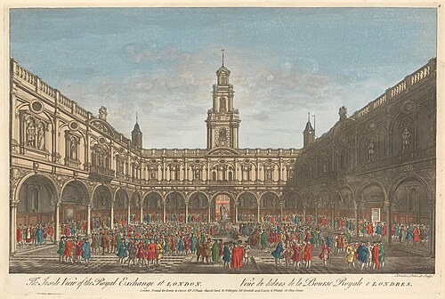
The Royal Exchange, London (1644)
[[SRC_MARKER:L5_Task_1_0]]Q4. Based on Source A, how did the visual appearance of London change as it became a global financial hub?
Look closely at the
1651 Great Seal of England, created after the King’s execution:
- No Royal Crown or Arms: For 600 years, the Great Seal bore the face of the ruling King or Queen on a horse. In 1651, the King’s face was completely erased.
- The House of Commons Side: Shows hundreds of MPs sitting in Parliament with the motto: "In the First Year of Freedom by God's Blessing Restored."
- The Map Side: Shows a detailed map of England, Ireland, and naval ships sailing in the Atlantic, emphasizing maritime power and imperial expansion over royal bloodlines.
Source E
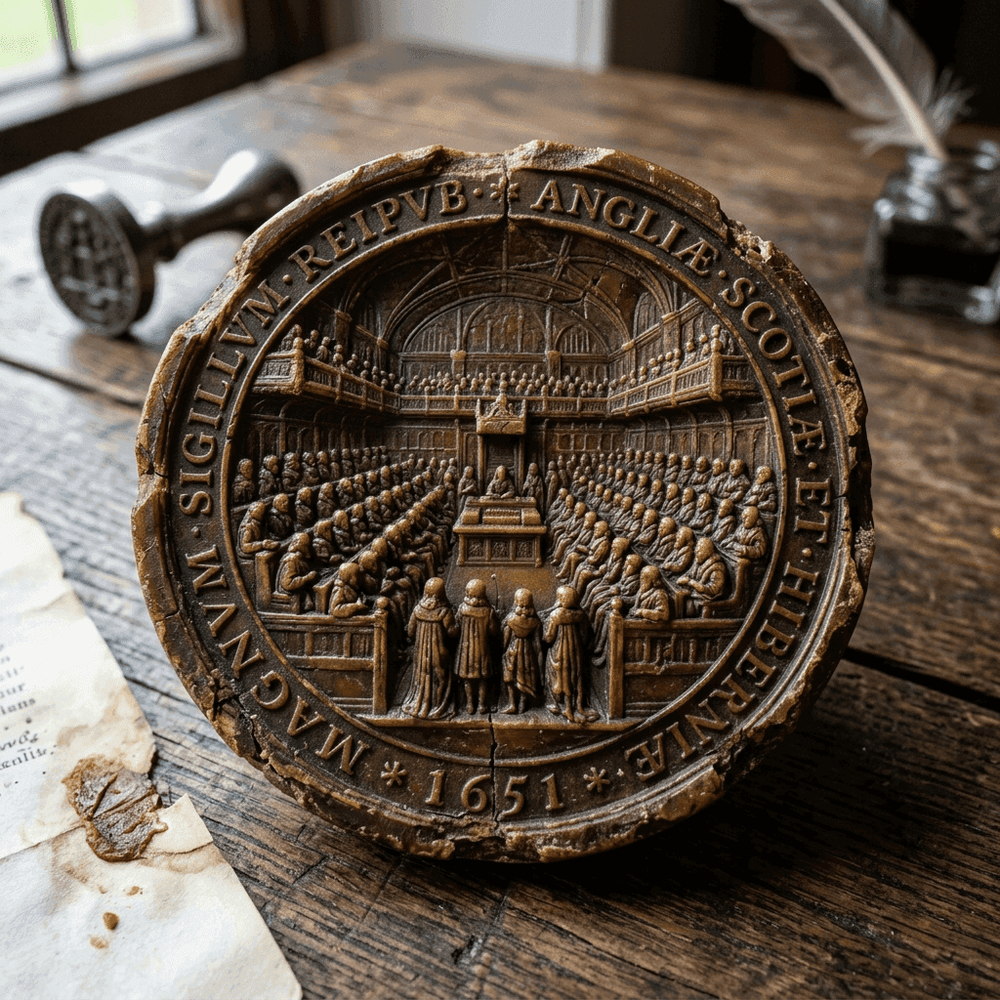
The Great Seal of the Commonwealth of England (1651)
[[SRC_MARKER:L5_Task_3_0]]Q5. Look at Source E. What did the design of the 1651 Great Seal signal about Britain's new priorities compared to the previous 600 years?
In 1660, after Cromwell died, Britain restored the monarchy, inviting Charles I’s son,
Charles II, back to the throne (
The Restoration). But did things really go back to how they were?
Interpretation 1: The Political View (Christopher Hill, 1961)
"The Execution of Charles I permanently smashed the Divine Right of Kings. Though Charles II returned in 1660, no British monarch would ever again rule without Parliament’s consent or impose taxes without their vote."
Interpretation 2: The Imperial/Economic View (Eric Williams, 1944)
"The true victor of the Civil War was neither the King nor Parliament; it was the Atlantic mercantile class. The sugar of Barbados and the tobacco of Virginia created a political force so wealthy that no King or Parliament could ever again govern Britain without prioritizing imperial trade."
Think-Pair-Share: Q6 How do Interpretation 1 and Interpretation 2 differ in identifying the true 'winner' of the Civil War?
| 1. My Thoughts (Think) |
2. Partner's Thoughts (Pair) |
|
|
Q7. Explain how the 'Financial Revolution' (like the Bank of England) helped Britain build a modern empire.
L7: What were the mechanics of the Transatlantic Slave Trade?[[SRC_MARKER:L6_Start]]
Learning Objectives
Understand the Triangular Trade and the middle passage.
Evaluate the economic legacy of slavery on Britain.
Do Now Activity
What is a 'joint-stock company'?
What cash crop saved the Jamestown colony from economic failure?
Who won the English Civil War (1642-1651)?
Vocabulary Check
Write a short paragraph using at least FOUR of the vocabulary words below correctly.
Triangular Trade | Middle Passage | Plantation
The Transatlantic Slave Trade was not simply a case of European ships arriving and kidnapping people from the beach. It was a massive, highly organized global business that relied on complex treaties and alliances. Powerful African empires, such as the Dahomey and the Asante, grew wealthy by launching military campaigns against rival inland groups, taking prisoners of war. These captives were marched for weeks to the coast and sold to European merchants in exchange for manufactured goods like brass, textiles, and, crucially, European firearms. The European merchants would lock the enslaved Africans in brutally crowded, disease-ridden coastal fortresses known as 'barracoons' or 'castles' (like Cape Coast Castle in modern-day Ghana) for months, waiting for slave ships to arrive. The trade enriched both European merchants and coastal African elites, while completely devastating the interior of the African continent.
This global business operated in three distinct steps, known as the Triangular Trade:
1. Outward Passage (Europe to Africa): Ships left Europe carrying manufactured goods (textiles, rum, and firearms).
2. The Middle Passage (Africa to the Americas): The manufactured goods were traded for enslaved Africans, who were transported across the Atlantic in brutal conditions.
3. The Return Passage (Americas to Europe): Enslaved labor produced raw cash crops (sugar, cotton, tobacco), which were shipped back to Europe to be sold at massive profits.
Source A

Cape Coast Castle, a European slave fort on the Gold Coast
[[SRC_MARKER:L6_Task_1_0]]Q1. How did powerful African empires like the Dahomey acquire people to sell into slavery?
[[SRC_MARKER:L6_Task_1_1]]Q2. What goods did European merchants trade in exchange for enslaved people?
[[SRC_MARKER:L6_Task_1_2]]Q3. Study Source A. What does the heavy fortification of Cape Coast Castle tell us about the nature of the slave trade?
[[SRC_MARKER:L6_Task_1_3]]Q4. Drawing Task: Draw a flowchart mapping the 'Triangular Trade' between Europe, Africa, and the Americas, labeling the goods traded at each point.
Between 1500 and 1867, over 12.5 million African men, women, and children were kidnapped, forced onto ships, and transported across the Atlantic Ocean. Over 3 million were carried on British ships.
Interactive Trade Map
Exports from Europe (Bristol, Liverpool, London)
- Manufactured Firearms: Cheap muskets and gunpowder used to fuel regional African wars.
- Textiles and Cloth: Mass-produced British cotton and wool items.
- Alcohol: Spirits such as rum and brandy used as trade currency.
- Metal Goods: Iron bars, brass pans, and manillas (copper bracelets).
Exports from West Africa
- Enslaved Human Beings: Men, women, and children captured in warfare or raids.
- Gold Dust: Extracted from the Gold Coast and heavily sought after by European merchants.
- Ivory: Elephant tusks traded as a luxury good.
- Spices: Exotic items like malagueta pepper (Guinea pepper).
Exports from The Americas
- Raw Sugar & Molasses: The most lucrative cash crop, grown in the brutal Caribbean plantations.
- Tobacco: Grown extensively in the colonies of Virginia and Maryland.
- Raw Cotton: Crucial raw material shipped to British textile mills during the Industrial Revolution.
- Coffee and Cocoa: Luxury consumables destined for European coffeehouses.
The Mechanics of "Chattel" SlaveryUnlike historical forms of bondage, Atlantic slavery was
chattel slavery. Enslaved people were defined by law as personal property, bought, sold, mortgaged, and inherited like cattle or furniture.
- The Middle Passage: A nightmare voyage lasting 6 to 10 weeks across the Atlantic. Humans were crammed below decks in spaces smaller than coffins. Between 15% and 20% of enslaved people died before reaching the Americas.
- Plantation Economics: Caribbean sugar production was brutal industrial labor. Enslaved workers were forced to cut sugarcane with machetes under burning heat for 18 hours a day, faced disease, and suffered severe punishment from white overseers.
Source B
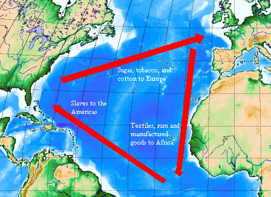
Diagram of the Triangular Trade
[[SRC_MARKER:L6_Task_3_0]]Q5. Based on Source B (the flowchart), what specific goods were exchanged for enslaved Africans in West Africa?
The experience of an enslaved African depended heavily on where the slave ship landed. In the Caribbean (like Jamaica and Barbados), the primary crop was sugar. Sugar cultivation was incredibly brutal, dangerous, and physically destroying labor. Many Caribbean plantations were owned by 'absentee landlords'—rich white men who lived in luxury in London and never even visited their estates, leaving brutal overseers in charge. Because profits were so high, these overseers calculated that it was cheaper to literally work enslaved people to death (the 'death camp' model) and simply buy replacements from Africa. Life expectancy upon arriving on a sugar plantation was often less than seven years. By contrast, in the North American colony of Virginia, the primary crop was tobacco. Tobacco required less intensive daily physical destruction than sugar. Furthermore, a different climate and slightly better diet meant that, by the 1700s, the enslaved population in Virginia became 'self-sustaining' (growing through childbirth rather than relying entirely on importing new people from Africa). While Virginia was still a brutal system of chattel slavery, the lethal intensity of the Caribbean sugar machine was unmatched.
Source C

A Cuban sugar plantation, showing the scale of the operation
[[SRC_MARKER:L6_Task_5_0]]Q6. What is an 'absentee landlord'?
[[SRC_MARKER:L6_Task_5_1]]Q7. Why was the Caribbean sugar system often described as a 'death camp' model?
[[SRC_MARKER:L6_Task_5_2]]Q8. Study Source C. Why do you think absentee landlords back in London were able to ignore the brutality shown in illustrations like this?
To understand how slavery shaped modern Britain, conduct a real-world historical investigation using the Centre for the Study of the Legacies of British Slavery at University College London (UCL).
🖥️ STUDENT RESEARCH INSTRUCTIONS
- Open your web browser and navigate to the UCL Legacies of British Slavery Database (ucl.ac.uk/lbs).
- Click on "Search the Database" and select "Commercial & Financial Legacies" or search by Geographic Location (e.g., Bristol, Liverpool, London).
[Visit ucl.ac.uk/lbs] ──► [Search Your Region] ──► [Trace Local Wealth]
📋 INVESTIGATION WORKSHEET
- Task A: Identify one individual/family who claimed compensation in 1833. Record their name, the number of enslaved people they 'owned', and the payout received.
- Task B: Investigate what happened to that wealth. Was it invested in local British buildings, railways, artwork, or bank stocks?
- Task C: Write a 150-word summary evaluating how your local area directly benefited from Atlantic plantation economies.
[[SRC_MARKER:L6_Task_6_0]]Q9. UCL Research Task Worksheet: Write down your findings for Task A and B, and write your 150-word summary for Task C here: Use the IDEA framework to structure your response.
Let's review the mechanics of the Transatlantic Slave Trade.
It is time to synthesize your understanding of the mechanics of the Transatlantic slave trade.
[[SRC_MARKER:L6_Task_8_0]]Q10. Lesson Reflection: How did the reality of the Transatlantic Slave Trade and the brutal 'death camp' model of the Caribbean sugar plantations challenge the idea that 18th-century Britain was a 'modern', enlightened, and civilized society? Use the IDEA framework to structure your response.
Q11. How did the Triangular Trade directly enrich British port cities?
L8: How did enslaved Africans resist the Transatlantic Slave Trade?[[SRC_MARKER:L7_Start]]
Learning Objectives
Analyze primary sources from formerly enslaved Africans.
Investigate the Jamaican Maroon Wars.
Do Now Activity
What were the three legs of the Triangular Trade?
What was a 'barracoon'?
Why was sugar known as a 'killer crop'?
Vocabulary Check
Write a historically accurate sentence connecting two terms from the glossary box below.
Obeah | Maroons | Covert Resistance
Your Sentence:Source A
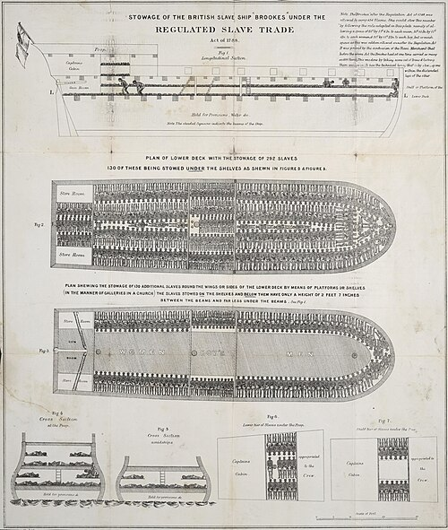
The infamous 1788 abolitionist poster showing a cross-section of the slave ship Brookes. It vividly exposed the horrific overcrowding and inhumane conditions enslaved Africans endured during the brutal Middle Passage, galvanizing public outrage in Britain.
Source B

A 1775 map of Jamaica by Thomas Jefferys. The island's rugged, mountainous interior provided sanctuary for Maroon communities—escaped enslaved Africans who waged a highly successful, decades-long guerrilla war against British colonial forces.
High in the mist-shrouded Blue Mountains of eastern Jamaica, an English army patrol crept through the dense rainforest in 1734. Suddenly, the trees themselves seemed to come alive.
Men and women dressed in camouflage woven from forest foliage descended upon the soldiers. The English troops were routed without ever seeing the main body of their enemy. Leading this guerrilla force was a woman whom British colonial officials called a "rebel witch," but whom her people knew as
Queen .
Born in the Gold Coast (modern-day Ghana) around 1686, Nanny was kidnapped, enslaved, and brought to Jamaica. She escaped from a sugar plantation into the rugged interior, joining communities of formerly enslaved people known as
Maroons (derived from the Spanish
cimarrón, meaning "wild" or "untamed").
Nanny was an extraordinary military strategist. She established
Nanny Town, a fortified, self-sufficient mountain sanctuary where freed Africans grew crops, maintained African cultural traditions, and launched lightning raids to free enslaved workers from nearby British sugar plantations.
For over a decade, British forces tried and failed to conquer Nanny Town. By 1739, the British Crown was forced to do something unthinkable:
sign a peace treaty with former slaves, recognizing their freedom and granting them 1,500 acres of autonomous land in Jamaica.
Queen Nanny’s story shatters a persistent historical myth: that enslaved Africans were passive victims who waited silently for white European abolitionists to free them. From the decks of slave ships to the sugar fields of the Caribbean, African resistance was continuous, sophisticated, and relentless.
[[SRC_MARKER:L7_Task_0_0]]Q1. Study Source B. How did the geography of Jamaica shown in the map help the Maroons wage a successful guerrilla war against the British?
[[SRC_MARKER:L7_Task_0_1]]Q2. How does the story of Queen Nanny challenge the traditional historical narrative about the abolition of slavery?
[[SRC_MARKER:L7_Task_0_2]]Q3. Drawing Task: Sketch a visual representation of Queen Nanny’s hidden mountain stronghold and how it helped the Maroons resist the British.
Resistance was not always an armed uprising. Enslaved Africans fought back against a dehumanizing system in dozens of calculated ways every single day.
Hidden Sabotage
- Slowing down work pace on the fields to damage profits
- Breaking tools and expensive plantation machinery on purpose
- Feigning illness, injury, or ignorance to avoid forced labor
- Secretly preserving African languages, religions, and music
- Poisoning overseers' food or livestock using local plants
Armed & Direct Defiance
- Armed rebellion, assassinations, and plantation burning
- Shipboard revolts and mutinies during the Middle Passage
- Marronage: Escaping permanently to form free, fortified towns
- Self-emancipation (purchasing own freedom) and publishing memoirs
- Political activism and speaking tours in European capitals
[[SRC_MARKER:L7_Task_1_0]]Q4. Give one example of covert resistance and explain why an enslaved person might choose it over overt resistance.
To truly understand the experience of the Transatlantic Slave Trade, we must read the words of those who survived it.
Source A: Olaudah Equiano Recounts the Terror of the Ship’s Hold (1789)
"The closeness of the place, and the heat of the climate, added to the number in the ship, which was so crowded that each had scarcely room to turn himself, almost suffocated us. This produced copious perspirations, so that the air soon became unfit for respiration, from a variety of loathsome smells, and brought on a sickness among the slaves, of which many died... The shrieks of the women, and the groans of the dying, rendered the whole a scene of horror almost inconceivable."
— Olaudah Equiano, The Interesting Narrative of the Life of Olaudah Equiano (1789).
Source B: Equiano Describes Shipboard Revolts
"One day, when we had a smooth sea and moderate wind, two of my wearied countrymen, who were chained together (I was near them at the time), preferring death to such a life of misery, somehow made through the nettings, and jumped into the sea: immediately another quite dejected fellow, who, on account of his illness, was suffered to be out of irons, also followed their example... I believe many more would very soon have done the same, if they had not been prevented by the ship's crew, who were instantly alarmed."
— Olaudah Equiano, The Interesting Narrative (1789).
Source C: A Jamaican Overseer’s Diary Recording Everyday Sabotage (1771)
"May 14: The slaves again delayed the grinding of the cane... claim the main waterwheel spindle is broken by accident, but I suspect it was done maliciously by the mill boiler. May 19: Found three cows dead in the lower pasture, poisoned with nightshade root. The Negroes deny all knowledge, but there is a spirit of sullen defiance among them."
— Adapted from the diary of , a Jamaican sugar plantation overseer.
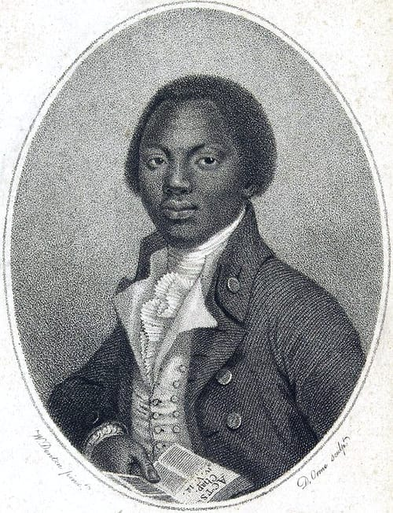
Portrait of Olaudah Equiano (1789)
[[SRC_MARKER:L7_Task_3_0]]Q5. Inferring Motive (Source A): Why did jumping overboard represent a powerful act of resistance for enslaved Africans, even though it resulted in death?
[[SRC_MARKER:L7_Task_3_1]]Q6. Evaluating Significance (Equiano's Portrait & Source A): Why was Equiano’s autobiography so historically revolutionary when published in London in 1789?
While hidden, day-to-day resistance was constant, sometimes it exploded into outright war. In September 1739, a literate enslaved man named Jemmy led a coordinated armed uprising in South Carolina known as the Stono Rebellion. The rebels seized weapons, marched under banners that read 'Liberty!', and beat drums to rally others as they marched south toward Spanish Florida (specifically the settlement of St. Augustine), where they were promised freedom. Although the rebellion was eventually crushed by the brutal South Carolina militia, it terrified the planter class. It proved that enslaved Africans could organize militarily and were actively fighting for their freedom, leading the panicked British colonists to pass the draconian 1740 Negro Act, which severely restricted enslaved people's ability to assemble, grow their own food, or learn to read.
Source D
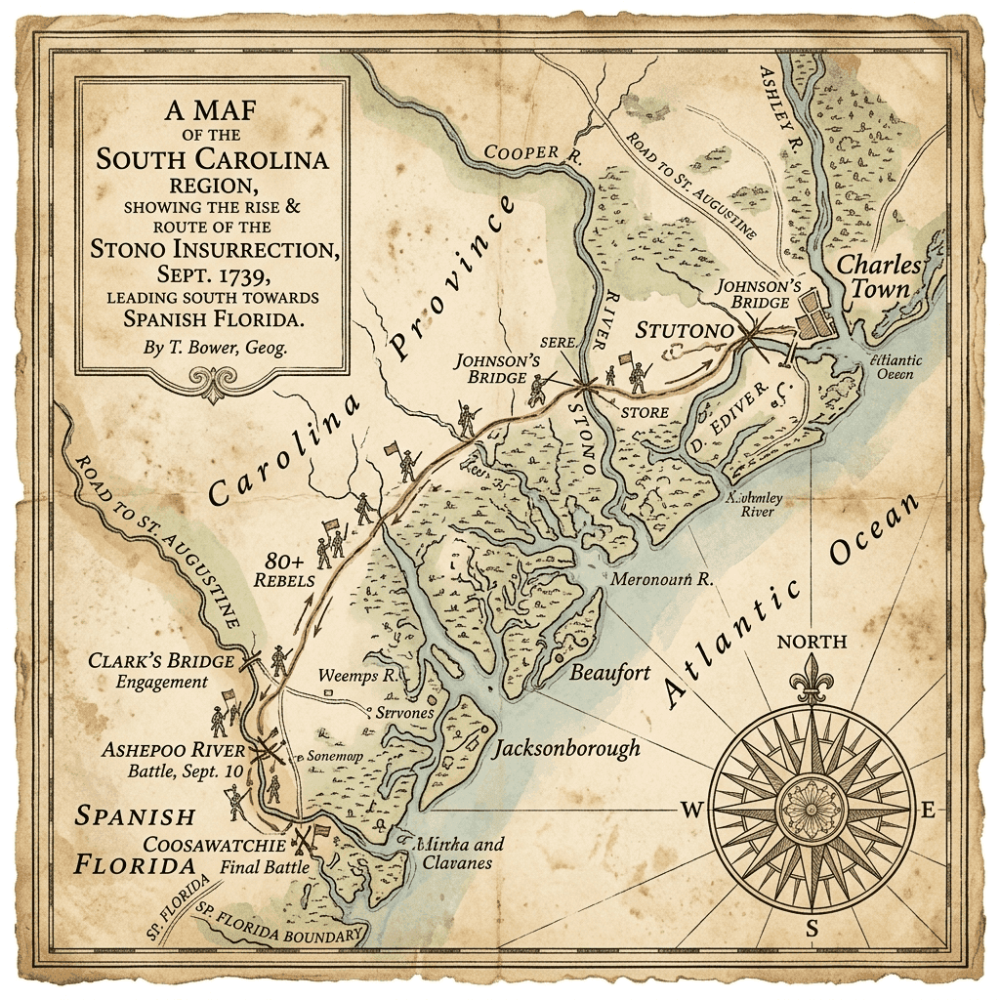
Map of the Stono Rebellion route (1739)
[[SRC_MARKER:L7_Task_5_0]]Q7. Based on the geography in Source D, why did the Stono Rebellion march specifically head South towards St. Augustine rather than inland, and what does this reveal about international rivalries?
Q8 Match the aspects of the Stono Rebellion to their correct historical descriptions.
| The Cause |
• • |
A group of 20 enslaved Africans broke into a store, armed themselves, and marched south beating drums. |
| The Event |
• • |
The Spanish promised freedom in Florida to any enslaved person who escaped. |
| The Consequence |
• • |
The British planters passed the brutal Negro Act of 1740, heavily restricting movement, assembly, and education. |
For a long time, the traditional history taught in British schools focused heavily on the 'White Savior Narrative'. This narrative argues that slavery was abolished in 1833 almost entirely because of moral, upper-class white politicians in Parliament—most famously, William Wilberforce. Wilberforce did indeed dedicate decades of his life to a tireless parliamentary campaign to ban the trade, using horrific evidence like the Brookes ship diagram to shock the British public.
However, modern historians (like Eric Williams) strongly challenge this 'white savior' focus. They argue that Wilberforce's moral campaign only succeeded because of two deeper reasons. First, economics: by the 1800s, the sugar plantations were becoming less profitable as the world industrialized. Second, grassroots resistance: massive, terrifying armed rebellions by enslaved people (like the Haitian Revolution and the Jamaican Baptist War) made slavery too dangerous and expensive for the British to maintain. In this view, enslaved people essentially forced the British government's hand; Wilberforce simply passed the law in London.
Source F

Portrait of , a British politician and abolitionist
Think-Pair-Share: Q9 Compare Source F with the story of Queen Nanny. Why is it dangerous to rely solely on portraits like Source C when trying to understand how and why the slave trade was eventually abolished?
| 1. My Thoughts (Think) |
2. Partner's Thoughts (Pair) |
|
|
Think-Pair-Share: Q10 What is the 'White Savior Narrative' in the context of the slave trade?
| 1. My Thoughts (Think) |
2. Partner's Thoughts (Pair) |
|
|
[[SRC_MARKER:L7_Task_7_2]]Q11. According to modern historians like Eric Williams, what were the *true* underlying reasons slavery ended?
[[SRC_MARKER:L7_Task_7_3]]Q12. Study Source F (Portrait of a British politician and abolitionist). Why were portraits like this important for the abolitionist movement in the late 18th century?
It is time to synthesize your understanding of how enslaved Africans resisted the Transatlantic Slave Trade.
[[SRC_MARKER:L7_Task_8_0]]Q13. Lesson Reflection: Why is it historically inaccurate and damaging to claim that the abolition of the slave trade was purely the result of benevolent white politicians like William Wilberforce? Use the IDEA framework to structure your response.
Source E
18th-century botanical illustration of the Cassava root
⚔️ Side Quest: Obeah and Botanical Warfare
When we think of resistance to slavery, we often picture armed rebellions or people running away. But there was a terrifying, silent, and highly intelligent form of psychological and chemical resistance happening right under the enslavers' noses. Enslaved people brought deep spiritual and botanical knowledge from West Africa, which evolved in the Caribbean into a belief system known as Obeah. Obeah practitioners (often women) were deeply respected healers within the enslaved community, possessing expert knowledge of local toxic plants. Because enslaved women often worked in the plantation houses cooking the enslavers' food, they occasionally used this botanical mastery to slowly, undetectably poison brutal overseers and plantation owners. Enslavers lived in a state of constant, paranoid terror of Obeah, passing strict laws to criminalize it.
[[SRC_MARKER:L7_Task_9_0]]Q14. Study Source E. Why might enslaved people's deep botanical knowledge of plants like cassava have been a more terrifying form of resistance for plantation owners than an armed rebellion?
[[SRC_MARKER:L7_Task_9_1]]Q15. Why might psychological and chemical resistance have been just as effective as armed rebellion?
Q16. Explain how the Jamaican Maroons successfully resisted British control.
L9: How 'modern' was Britain by 1750? (Synthesis & Assessment)[[SRC_MARKER:L8_Start]]
Learning Objectives
Define what historians mean by a 'modern' state in the context of 18th-century Europe.
Synthesise domestic social realities with imperial/commercial expansion across the period 1450–1750.
Construct a high-level, structured final essay evaluating the extent of Britain's 'modernity' by 1750.
Do Now Activity
What was the primary function of the 1607 Jamestown Fort design?
Why did Oliver Cromwell execute King Charles I in 1649?
What was the strategic advantage of the Jamaican Maroons' location?
What motivated the creation of the Royal African Company?
Vocabulary Check
Write a clear definition and a historically accurate sentence for the term: Modernity
Source A

A 1632 painting by Claude de Jongh showing London Bridge. By the 18th century, the River Thames was choked with global merchant shipping, reflecting London's explosion in population and its status as the center of a global empire.
Source B

William Hogarth's 1751 engraving 'Gin Lane' depicts the horrifying social decay, poverty, and alcohol addiction rampant in 18th-century London slums. Hogarth created this print as a direct piece of propaganda to support the Gin Act, seeking to reduce the mass consumption of cheap spirits.
In October 1750, a French aristocrat named Pierre-Jean Grosley stood on London Bridge and looked out over the River Thames.
To his right, he saw a forest of wooden masts belonging to over 1,000 merchant ships. These vessels had arrived from Canton, Calcutta, Barbados, and Virginia, packed with tea, silk, raw sugar, and tobacco. Nearby stood the Bank of England and the Royal Exchange, where stockbrokers traded paper credit, fire insurance, and national debt using complex mathematics that stunned the rest of Europe. London was the financial beating heart of a global, capitalist empire.
Then Grosley walked off the bridge and turned into the narrow alleys of St. Giles.
Within five minutes, the scent of expensive Indian spices was replaced by the stench of open sewage, rotting garbage, and cheap gin. He passed desperate mothers pouring raw grain spirit down the throats of crying infants to quiet them. In these slums, 50% of children died before the age of five. Medical care still relied on bloodletting with leeches, public executions at Tyburn Tree drew crowds of 30,000 howling spectators, and women had zero legal rights, remaining the legal property of their husbands.
Grosley was left with a baffling paradox: Was Britain in 1750 a hyper-modern global superpower, or a brutal, unequal medieval society wearing a wig?
As Britain grew incredibly wealthy from the transatlantic slave trade and the East India Company, it developed a powerful new self-image. The British elite did not view themselves as brutal conquerors; instead, they believed they were bringing civilization and order to the world. Art from this period heavily utilized classical mythology to portray Britannia as a righteous, glorious figure receiving the willing submission and wealth of the globe.
Source A
The East Offering its Riches to Britannia (1778)
[[SRC_MARKER:L8_Task_2_0]]Q1. Study Source A. How does this painting glorify the British Empire while masking the brutal realities of colonization?
To answer our key enquiry, we must step back and examine the transformation of Britain over the entire 300-year span of this unit.
1450: FEUDAL & ISOLATED
• Absolute Monarchy • Subsistence Agriculture • Regional Trade • No Colonies
⬇ [300 YEARS OF TRANSFORMATION] ⬇
1750: THE PRE-INDUSTRIAL STATE
✅ PRO-MODERN ELEMENTS - Constitutional Monarchy
- Global Commercial Empire
- Financial System (Bank of England)
- Early Infrastructure (Turnpikes)
❌ UN-MODERN REALITIES - Disenfranchisement (<5% vote)
- Brutal 'Bloody Code'
- Empire built on slavery
- Pre-Industrial Technology
Explore the two sides of the argument below to decide if Britain was truly 'modern':
Argument A: Global Wealth (Modern)
Britain Was Superbly "Modern" by 1750
- Constitutional Balance: The Civil War (1642–1651) and Glorious Revolution (1688) permanently ended absolute royal tyranny. King George II governed through Parliament.
- The Financial Revolution: Founded in 1694, the Bank of England invented the modern system of national debt and paper banknotes, allowing Britain to out-finance rivals.
- Global Economic Integration: British citizens drank tea from China, sweetened with Caribbean sugar, smoked Virginia tobacco, and wore Bengal cotton.
- Transport Infrastructure: By 1750, over 1,500 miles of Turnpike Roads (paved toll roads) connected London to provincial towns, cutting travel times in half.
Argument B: Domestic Reality (Un-Modern)
Britain Remained Profoundly "Un-Modern" by 1750
- Political Inequality: Parliament was controlled entirely by wealthy aristocrats. Less than 5% of the male population had the right to vote. Rotten boroughs bought and sold elections.
- The "Bloody Code": The legal system terrorized criminals. Over 200 offenses carried the death penalty, including stealing a sheep or picking a pocket.
- An Empire Built on Slavery: Britain’s economic "modernity" was completely reliant on the barbaric machinery of the Transatlantic Slave Trade.
- Pre-Industrial Technology: In 1750, 80% of the population still lived in rural villages. Factories did not yet exist. Power came from human muscles, horses, wind, and water.
[[SRC_MARKER:L8_Task_3_0]]Q2. Drawing Task: Draw a single symbol or logo that you feel best represents the state of 18th-century Britain (e.g., a combination of a bank, a ship, and chains).
Source B
The Royal Exchange, London (1644)
[[SRC_MARKER:L8_Task_4_0]]Q3. Based on Source B (Weighing the Evidence toggle tabs), identify one piece of political evidence that proves Britain was modern, and one piece of political evidence proving it was un-modern.
Analyze these two contrasting contemporary accounts written in the mid-18th century.
Source C: From a German Visitor's Diary (Pehr Kalm, 1748)
"In England, even the common country people live well and wear clean linen. Their homes are built of brick or stone, not clay. Every village hath its turnpike road, and goods are transported with incredible speed by wagon and barge. The law protects the poorest peasant from the nobleman; no man may be imprisoned without trial. In commerce and freedom of speech, Britain is two hundred years ahead of the continent."
Think-Pair-Share: Q4 Reconciling Contradictions: How can Source C and Source D offer completely opposite views of Britain in the late 1740s/1750s without either author necessarily lying?
| 1. My Thoughts (Think) |
2. Partner's Thoughts (Pair) |
|
|
Source D: From a London Magistrate's Report on Crime (Henry Fielding, 1751)
"The streets of this great city are daily rendered unsafe by bands of armed footpads and cutpurses... Multitudes of wretches perish annually of sheer cold and gin-poisoning in the cellars of St. Giles, unheeded by any magistrate. Our prisons are foul dens of typhus fever where accused men rot for months before trial. We boast of our liberties, yet our poor live in a state of barbarism lower than the beasts."
[[SRC_MARKER:L8_Task_6_0]]Q5. Synthesis Challenge: Combine the insights from Sources C and D with your knowledge of the Atlantic Slave Trade to write a nuanced 3-sentence summary of British society in 1750.
Source E

John Rocque's Map of London (1746)
[[SRC_MARKER:L8_Task_7_0]]Q6. How does the density and infrastructure of London shown in Source E (1746) provide hard evidence for a 'modernizing' Britain compared to the agricultural society you studied in 1450?
Historian Perspective A: (1990)
"By 1750, Britain was already the world’s first modern, secular, consumer society. It possessed a constitutional government, a vibrant free press, unmatched global trade, and an enterprising middle class that valued property, science, and progress."
Historian Perspective B: (1985)
"18th-century Britain was not a 'modern' nation; it was an Ancien Régime—a deeply traditional, aristocratic, and religious society dominated by the Anglican Church, wealthy landowners, and a hereditary monarchy. Most people’s daily lives were governed by ancient custom, local isolated community, and rural poverty."
To conclude this entire 1450–1750 unit, you will write a 4-paragraph final essay answering the enquiry question:
"How 'modern' was Britain by 1750?"Q7 Assessment Planner: Structure your argument before you write your final essay.
| Point (Your claim) | Evidence (Historical facts) | Explanation (Why this matters) |
|---|
| | |
| | |
| | |
[[SRC_MARKER:L8_Task_9_1]]Q8. Map these historical realities onto the spectrum below to plan your argument.
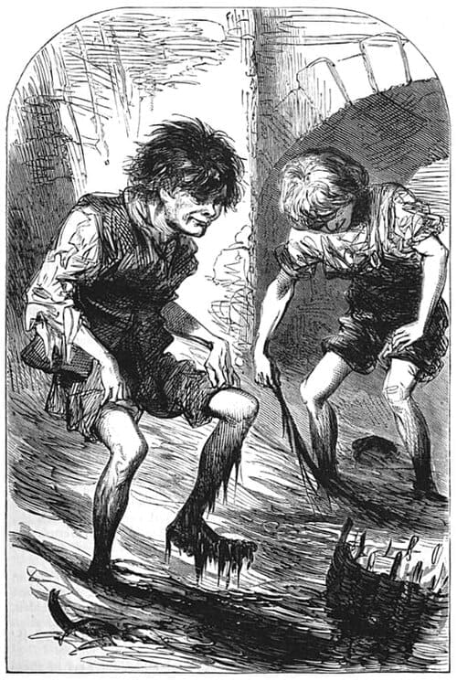
Source F: An authentic drawing of 'Mudlarks' scavenging in the freezing River Thames, showing the extreme poverty that still haunted London.
By 1750, wealthy Londoners were discussing Enlightenment science in elegant coffee houses. But for the desperately poor, this 'modern' city was a brutal slum. Driven by plummeting grain prices, a horrifying epidemic known as the Gin Craze gripped the capital. Gin was cheaper than beer and safer to drink than the filthy Thames water, devastating working-class slums with addiction, crime, and starvation. Meanwhile, desperate children known as 'Mudlarks' spent their days wading thigh-deep in the freezing, sewage-filled mud of the River Thames just to scavenge for dropped scraps of coal or copper to sell for a penny. For the urban poor, 1750 did not feel 'modern'—it felt lethal.
[[SRC_MARKER:L8_Task_11_0]]Q9. Study Source F. How does the existence of 'Mudlarks' challenge the idea that 1750 London was entirely prosperous and modern?
Q10. How 'modern' was Britain by 1750?
Generated: 2026-08-31 09:13:56 UTC | Unit: early_modern_world